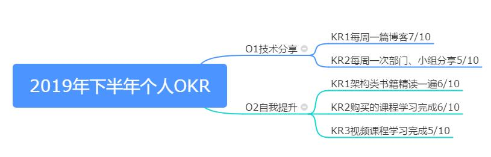

OKR解读
什么是OKR
- Objectives & Key Results(目标与关键结果)。
- 一种企业，团队，个人目标设定与沟通的工具，是通过结果去衡量过程的方法与实践。
- 一种自我激励督促的手段。
OKR 是一种与 KPI 类似的工具，但是两者的出发点是完全不同的。KPI 强调的硬性指标，自上而下分配的任务，完全完全指导考核结果；但是 OKR 不一样，OKR 是一种激励督促的方式，强调的是创新性与挑战性，而且有自上而下或者自下而上两种方式，并且最大的特点是 OKR 的打分不直接与绩效考核挂钩。当然这里说的是不直接，但是还是会影响的。
OKR的制定
Objective 目标
- 目标要积极阳光：
- 一个积极阳光的目标是可以激发人的斗志的，在制定目标的时候尽量采用积极和正能量的词汇，比如：大幅度提升，远远超过，显著提升，最成功等，目标必须要让人看到就很激动，很有激情。但是也要注意不能太虚，避免制定一些根本不现实的目标和使用一些不恰当的词汇。
- 目标要有挑战：
- OKR 的核心是强调创新性和挑战性，所以我们的目标要尽量的有挑战，那种十拿九稳的目标就不要制定了，就需要制定那种刚好跳一跳就能够到目标，这样在目标实现过后才会有真正的成就感。太容易的目标，不具有挑战性会使人失去斗志。具有挑战但是也要符合实际，不能设定根本无法达成的目标。
- 对团队来说目标要可执行和有价值：
- 对于一个团队来说设定的目标如果没有价值和无法执行那就是无效的目标，制定出来也没有任何效果，只能失败。
- 透明性：
- OKR 是完全透明的，意思是说任何人制定的 OKR 其他人都能查阅的，完全透明。
OKR 是一种不限制场景使用的一个工具，可以是在公司内部，也可以是个人生活学习使用，基本的思路与原理都是一样的，只是不同场景所制定的 O 是不一样的。对于我们个人来说，不管是工作还是生活在一个周期里面一般设定 3-4 个 O 是最合适的，太多的 O 容易导致时间精力太分散不容易聚焦，太少可能不能很好的满足自己的需求，这个可以根据个人情况去制定。
- OKR 是完全透明的，意思是说任何人制定的 OKR 其他人都能查阅的，完全透明。
- 目标要积极阳光：
Key Results
- 必须是可以量化的：
- 写 KR 的时候一定要带上量化指标，比如：每个月写四篇公众号文章。而不能说”每个月都要写几篇文章”。这样不确定的 KR 是不会有效果，KR 就是要把关键的指标写出来，有些东西只有写出来才能真正的被落实。
- 是关键结果而非工作清单：
- 很多人一开始写 OKR 的时候容易把 KR 写成一个个的任务清单，这是不对的，每个任务清单属于 KR 的下层，我们叫做 Plan，所以 KR 是对一系列 P 的组合和有量化的概括。
- 编写使用积极简洁的语言：
- 跟目标类似，KR 的编写也需要使用积极的语言，并且保证语言的简洁和明确负责人，避免误解。
- 一定要能支撑指定的 O:
- 编写的 KR 一定要能支撑上层的 O，编写的时候一定要确定这个 KR 是否能支撑 O，不能则说明这个不是关键 KR 就不需要写，另外 KR 一定要从多个维度去写。
在制定好了一个 O 过后，我们就需要列出为了能支撑这个 O 我们需要完成的哪些关键的结果。每一个 O 尽量列出 3-4 个 KR。
- 编写的 KR 一定要能支撑上层的 O，编写的时候一定要确定这个 KR 是否能支撑 O，不能则说明这个不是关键 KR 就不需要写，另外 KR 一定要从多个维度去写。
- 必须是可以量化的：
OKR落实的注意项
- 企业内部
- 一定要确保透明，不管是领导制定的 OKR 还是员工制定的 OKR 都要无条件透明，最好的方式就是录入系统或者打印贴出来。
- 制定的过程中一定要通过共识会达到相关人员的共识才可以。
- OKR 在一个季度或者月结束后是会有打分的，OKR 的打分不直接影响考核，但是会被参考。
- OKR 是鼓励创新和挑战，所以是不存在惩罚的。
- 个人生活
- 按照个人习惯可以指定自己或者家人的年度，季度或者月度的 OKR。
- 每个月要阅读两本书，以及每个月要锻炼身体五次等有意义的 KR。
- 可以指定一个年度理财计划目标，通过具体的阅读投资书籍，或者购买基金股票，以及其他方式的投资来支撑你的目标，从而列出一系列的关键 KR。
例子

图中的 (5/10) 这种表示的是完成这个 KR 的信心指数，这个信心指数很有讲究的，如果太低了说明这个 KR 实现的难度太大，不建议采用，如果太高了，说明这个 KR 太容易完成了，缺乏挑战。所以我们在填写 KR 的时候需要找到那些有六成七成把握的关键结果。